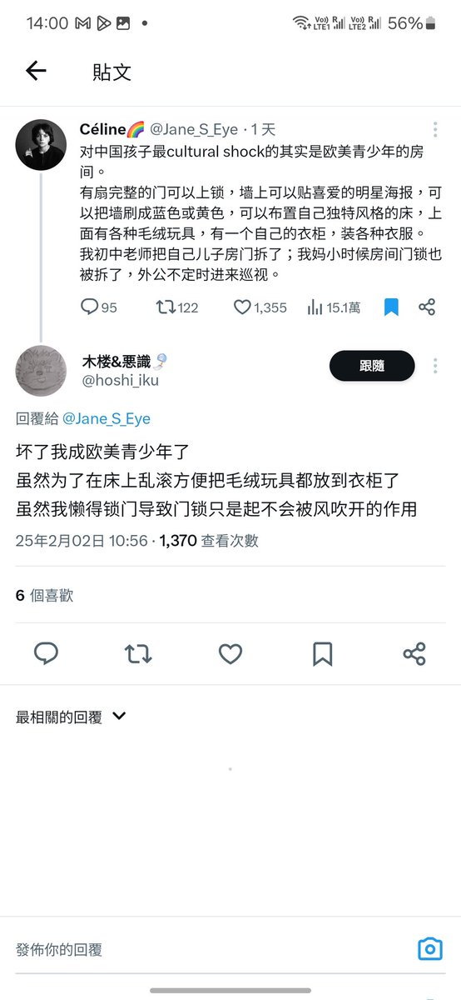
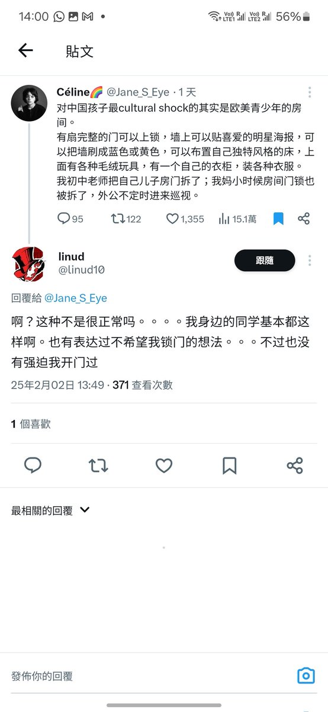
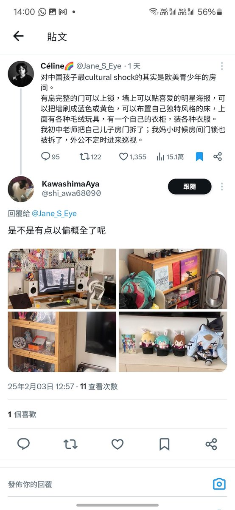
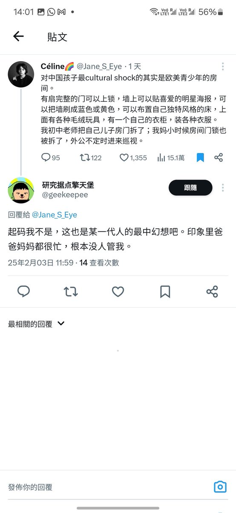

誒，可是我只是表達自己的一個觀點，即不是所有的中國孩子都沒有自己的personal space，也想表達出原po以偏概全，並不是中國的真是狀況。和我有相同觀點的人也不止我一位。網路不應該是一個只能容許一種個人狀況，一種觀點的地方。社交平臺之所以能進行社交，正是因為不同的觀點能互相交流。
這個世界存在不止一套價值觀，每個人對於公平，道德是有不同的標準的。你的標準，不代表我的標準。而正邪惡正正就是一個道德批判，我不認為我有資格批判別人，同理，我也不認為你有資格對我人生攻擊。
價值觀不需要一致，要是一致就太無聊了。標籤不是問題，關鍵點是標籤的準繩度，尤其是我們會不會用自己的標準，去衡量一個標準與自己完全不同的人，從而給錯誤的標籤在他身上呢？同一個po文，可以有不同的解讀。如果一看，你就認為有貶義，那很可能反應的是你自己的個人想法。
如果我為了反對一個人，去誣衊他，那是否反應，其實我是為了錯誤的原因，為反而反呢？
透過標籤去否定對方，結果不小心，揭示出了自己的立場，那是標籤我，還是標籤你自己呢？
這個世界存在不止一套價值觀，每個人對於公平，道德是有不同的標準的。你的標準，不代表我的標準。而正邪惡正正就是一個道德批判，我不認為我有資格批判別人，同理，我也不認為你有資格對我人生攻擊。
價值觀不需要一致，要是一致就太無聊了。標籤不是問題，關鍵點是標籤的準繩度，尤其是我們會不會用自己的標準，去衡量一個標準與自己完全不同的人，從而給錯誤的標籤在他身上呢？同一個po文，可以有不同的解讀。如果一看，你就認為有貶義，那很可能反應的是你自己的個人想法。
如果我為了反對一個人，去誣衊他，那是否反應，其實我是為了錯誤的原因，為反而反呢？
透過標籤去否定對方，結果不小心，揭示出了自己的立場，那是標籤我，還是標籤你自己呢？



